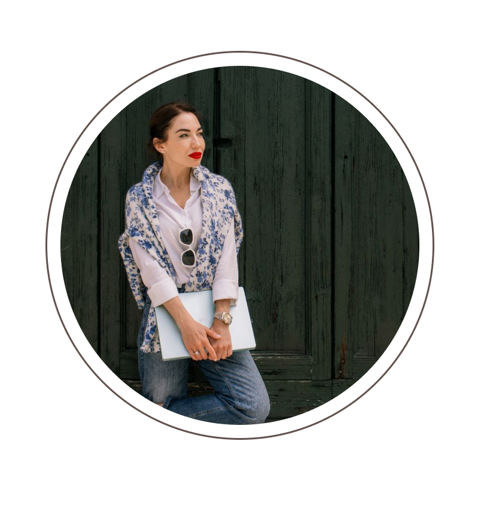

EFFICACE MARKETING SOLUZIONI

PER IL SUO ATTIVITÀ COMMERCIALE
Servizi di marketing nella regione Veneto, Italia
Benvenuti in IconMarketing - La tua agenzia di marketing nel Veneto. Siamo esperti nel fornire servizi di marketing personalizzati per aziende di tutte le dimensioni. Il nostro obiettivo è garantire una visibilità massima e il successo dei tuoi progetti nel competitivo mercato Veneto.
Perché Scegliere IconMarketing?
i nostri vantaggi
- Competenza
- Realizziamo progetti di successo in una vasta gamma di aree di business in tutta Europa, Veneto compreso.
- Approccio sistematico
- Analisi dettagliate del mercato e del pubblico target ci aiutano a creare prodotti e campagne unici.
- Metodi moderni
- Stiamo implementando attivamente la digitalizzazione aziendale e utilizzando gli strumenti di marketing più recenti per ottenere i massimi risultati.
I Nostri Servizi di Marketing
- Analisi di Mercato e della Concorrenza nel Veneto:
- Effettuiamo ricerca approfondita sul mercato e sulla concorrenza nel Veneto per identificare opportunità di crescita.
- Sviluppo e Implementazione di Piani di Marketing:
- Creiamo strategie di marketing su misura per raggiungere i tuoi obiettivi aziendali specifici.
- Branding e Identità Visiva:
- Sviluppiamo un’immagine di marca unica e riconoscibile per differenziare la tua azienda nella regione del Veneto.
- Social Media Marketing (SMM):
- Promuoviamo il tuo brand sui social media per aumentare la riconoscibilità e l’engagement del tuo pubblico target.
- Ottimizzazione per i Motori di Ricerca (SEO):
- Ottimizziamo il tuo sito web per migliorarne il posizionamento sui motori di ricerca e attirare più visitatori.
- Email Marketing Efficace:
- Progettiamo campagne di email marketing per coinvolgere e convertire i tuoi potenziali clienti.
- Creazione di Contenuti Visivi di Qualità (Foto/Video):
- Produciamo contenuti visivi accattivanti per valorizzare la tua offerta e coinvolgere il tuo pubblico.
- Gestione della Reputazione e Marketing di Crisi:
- Offriamo strategie per gestire la reputazione del tuo brand e affrontare situazioni di crisi.
- Organizzazione di Eventi e Presentazioni:
- Ci occupiamo della pianificazione e dell’organizzazione di eventi professionali nel Veneto.
- Produzione di Merchandise e Materiale Promozionale (POSM):
- Creiamo prodotti promozionali personalizzati per sostenere le tue campagne di marketing.
Pacchetti di Servizi di Marketing nel Veneto
- Analisi del business e dei concorrenti
- Impostazione dei profili sui social media
- Creazione di un piano di contenuti mensile (8 post)
- Report sui risultati alla fine del mese
- Creazione di contenuti foto/video a pagamento aggiuntivo
- Analisi del business e dei concorrenti
- Sviluppo dell’identità visiva e del brand book
- Impostazione dei profili sui social media
- Creazione di un piano di contenuti mensile (12 post)
- Impostazione di campagne pubblicitarie (budget per la promozione separato)
- Report sui risultati settimanali
- Creazione di contenuti foto/video a pagamento aggiuntivo
- Analisi del business e dei concorrenti
- Sviluppo dell’identità visiva e del brand book
- Creazione di una strategia unica di promozione e raccomandazioni per il miglioramento del prodotto
- Impostazione dei profili sui social media
- Creazione di un piano di contenuti mensile (12 post)
- Impostazione di campagne pubblicitarie (budget per la promozione separato)
- SEO ottimizzazione e promozione del sito
- Controllo quotidiano degli indicatori e consultazioni individuali con i nostri specialisti
- Creazione di contenuti foto/video in regalo (per contratti superiori a 3 mesi)